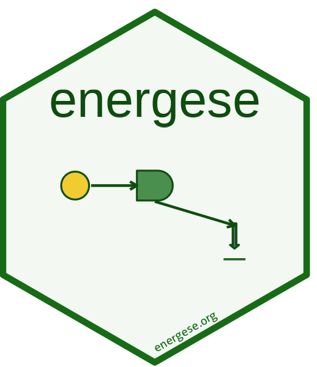

Authors and Citation
Authors
-
Eric Scheier. Author, maintainer.
Citation
Source: inst/CITATION
Scheier E (2026). energese: ggplot2 Layers for H.T. Odum's Energy Systems Language. R package version 0.1.0, https://github.com/ericscheier/energese.
@Manual{,
title = {energese: ggplot2 Layers for H.T. Odum's Energy Systems Language},
author = {Eric Scheier},
year = {2026},
note = {R package version 0.1.0},
url = {https://github.com/ericscheier/energese},
}
Odum H, Pigeon R (eds.) (1970). A Tropical Rain Forest: A Study of Irradiation and Ecology at El Verde, Puerto Rico. U.S. Atomic Energy Commission, Division of Technical Information.
@Book{,
title = {A Tropical Rain Forest: A Study of Irradiation and Ecology at El Verde, Puerto Rico},
editor = {Howard T. Odum and Robert F. Pigeon},
year = {1970},
publisher = {U.S. Atomic Energy Commission, Division of Technical Information},
}
Odum H (1994). Ecological and General Systems: An Introduction to Systems Ecology. University Press of Colorado. Revised edition.
@Book{,
title = {Ecological and General Systems: An Introduction to Systems Ecology},
author = {Howard T. Odum},
year = {1994},
note = {Revised edition},
publisher = {University Press of Colorado},
}
Odum H, Odum E (2000). Modeling for All Scales: An Introduction to System Simulation. Academic Press.
@Book{,
title = {Modeling for All Scales: An Introduction to System Simulation},
author = {Howard T. Odum and Elisabeth C. Odum},
year = {2000},
publisher = {Academic Press},
}
Odum H (2007). Environment, Power, and Society for the Twenty-First Century: The Hierarchy of Energy. Columbia University Press.
@Book{,
title = {Environment, Power, and Society for the Twenty-First Century: The Hierarchy of Energy},
author = {Howard T. Odum},
year = {2007},
publisher = {Columbia University Press},
}
Brown M (2004). “A picture is worth a thousand words: energy systems language and simulation.” Ecological Modelling, 178, 83–100. doi:10.1016/j.ecolmodel.2003.12.008.
@Article{,
title = {A picture is worth a thousand words: energy systems language and simulation},
author = {Mark T. Brown},
journal = {Ecological Modelling},
year = {2004},
volume = {178},
pages = {83--100},
doi = {10.1016/j.ecolmodel.2003.12.008},
}